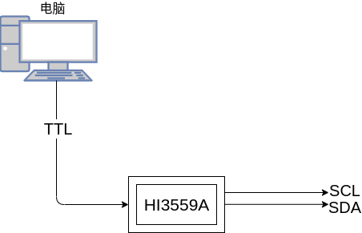

shuixia08-liteos-i2c_user
[TOC]
一、概述
I2C 模块的作用是完成 CPU 对 I2C 总线上连接的从设备的读写。
I2C 控制器为 Master 接口，完成 CPU 对 I2C 总线上连接的从设备的读写访问。芯片共有 20 个 I2C 控制器，主 SOC 子系统有 12 个，Sensor Hub 子系统有 8 个。
I2C 控制器具有以下功能特点：
- 芯片的 I2C 是 Master 接口，支持标准时序和非标准时序。
- 支持多主设备时的总线仲裁。
- 支持 Clock synchronization 和 Bit and Byte waiting。
- 支持标准地址（7bit）和扩展地址（10bit）。
- 传输速率支持标准模式（100kbit/s）和快速模式（400kbit/s）。
- 支持 General Call 和 Start Byte 功能。
- 不支持 CBUS 器件。
- 支持 DMA 操作。
- 支持 64 x 8bit 的 TX FIFO 和 64 x 8bit 的 RX FIFO
二、 参考文件
GPIO复用功能描述文件《Hi3559A V100_PINOUT_EN.xlsx》
驱动操作使用指南《外围设备驱动 操作指南.pdf》
寄存器相关操作《Hi3559A╱C V100 ultra-HD Mobile Camera SoC 用户指南.pdf》
三、驱动编译
1.官方驱动
源码路径为 drivers/i2c。用户需要对 I2C 设备进行访问操作时，首先要在编译脚本里指定 I2C 源码路径与头文件路径。编译成功后，out 目录下会生成名为 libi2c.a 的库文件。链接时需要通过-li2c 参数指定该库文件。
文件列表
| 文件名称 | 描述 | 备注 |
|---|---|---|
| drivers/i2c/***.c | 接口源文件 | |
| drivers/i2c/libi2c.a | 静态库文件 | |
| 等等 |
使用步骤
-
步骤 1. 驱动初始化，调用如下接口：
i2c_dev_init();
-
步骤 2. 开发者需要根据设备硬件特性配置相关的管脚复用。
具体请参考《Hi3559AV100_PINOUT_CN》中管脚控制寄存器页签。
-
步骤 3. 用户可根据需要调用模块的读写函数对设备进行访问。
2.用户驱动
官方的驱动很大一部分需要用户了解一些底层知识，因此在官方驱动的基础上封装了一层用户驱动。
用户驱动的使用如下：
-
调用SPI初始化函数
hal_spi_initial()
-
创建接受线程，等待接收数据被唤醒
hal_spi_read()
-
发送数据
hal_spi_write()
-
数据收发
hal_spi_convert()
四、API说明
1.官方驱动
官方提供的驱动如下所示：提供了open()函数、close()函数、read()函数、write()函数、ioctl()函数。(如需要使用额外的功能，还需要用户自行操作底层API)。
static const struct file_operations_vfs i2cdev_fops =
{
i2cdev_open,
i2cdev_release,
i2cdev_read,
i2cdev_write,
NULL,
i2cdev_ioctl,
#ifndef CONFIG_DISABLE_POLL
NULL,
#endif
NULL
};
open()
/******************************************************************************
函数功能：posix标准函数，用于打开一个设备
输入参数：
__path：设备、端口设备为："/dev/i2c-0" "/dev/i2c-1" "/dev/i2c-2" "/dev/i2c-3"等
__oflag：打开方式：O_RDWR：可读可写
输出参数：
文件句柄，负数：错误 非负数：打开成功
******************************************************************************/
open (const char *__path, int __oflag, ...)
read()
int (*close)(FAR struct file *filep);
ssize_t (*read)(FAR struct file *filep, FAR char *buffer, size_t buflen);
ssize_t (*write)(FAR struct file *filep, FAR const char *buffer, size_t buflen);
off_t (*seek)(FAR struct file *filep, off_t offset, int whence);
int (*ioctl)(FAR struct file *filep, int cmd, unsigned long arg);
/******************************************************************************
函数功能：posix标准函数，读取设备的数据
输入参数：
filep：open()返回的文件句柄
buffer：读取数据的指针
buflen：期望读取的数据长度
输出参数：
实际读取的数据长度
******************************************************************************/
ssize_t read(FAR struct file *filep, FAR char *buffer, size_t buflen);
write()
/******************************************************************************
函数功能：posix标准函数，往设备写数据
输入参数：
filep：open()返回的文件句柄
buffer：写入数据的指针
buflen：期望写入的数据长度
输出参数：
实际写入的数据长度
******************************************************************************/
ssize_t write(FAR struct file *filep, FAR char *buffer, size_t buflen);
ioctl()
/******************************************************************************
函数功能：posix标准函数，用来设置一个设备
输入参数：
filep：open()返回的文件句柄
cmd：设置的参数类型
arg：设置的参数
输出参数：
读取数据时，返回的数据
******************************************************************************/
int (*ioctl)(FAR struct file *filep, int cmd, unsigned long arg);
可设置的参数如下：
| 命令 | 命令码 | 参数 | 返回值 | 说明 |
|---|---|---|---|---|
| IOCTL_TIMEOUT | 0x0702 | 事件 | 设置超时 | |
| IOCTL_SLAVE | 0x0703 | 地址 | 设置从机地址 | |
| IOCTL_SLAVE_FORCE | 0x0706 | 无效 | ||
| IOCTL_TENBIT | 0x0704 | 0(7bit),1(10bit) | 设置地址长度 | |
| IOCTL_RDWR | 0x0707 | 数据 | 数据 | 数据读写 |
| IOCTL_SMBUS(N) | 0x0720 | 选择使用smbus模式 | ||
| IOCTL_16BIT_REG | 0x0709 | 0:(byte),1:(half) | 设置寄存器数据长度 | |
| IOCTL_16BIT_DATA | 0x070a | 0:(byte),1:(half) | 设置传输数据长度 |
2.用户驱动
*int hal_i2c_initial(const char path)
/****************************************************
* 函数功能：I2C接口初始化
* 输入参数：
* path：spi设备，端口设备为："/dev/i2c-0" "/dev/i2c-1"等
* 输出参数：
* 文件句柄
* *************************************************/
int hal_i2c_initial(const char *path);
int hal_i2c_read(int fd,uint16_t slave_addr, uint16_t reg_addr, uint8_t rx_buff, uint8_t addr_bits, uint8_t reg_bits, uint8_t data_bits)*
/****************************************************
* 函数功能：SPI读取一个数据
* 输入参数：
* fd：文件句柄
* slave_addr：芯片的地址
* reg_addr: 寄存器地址
* rx_buff：接收数据的指针
* addr_bits：芯片地址的位数，7 or 10
* reg_bits：寄存器地址的位数，8 or 16
* data_bits：数据的位数，8 or 16
* 输出参数：
* 1：传输成功 0：传输错误
* *************************************************/
int hal_i2c_read(int fd,uint16_t slave_addr, uint16_t reg_addr, uint8_t* rx_buff, uint8_t addr_bits, uint8_t reg_bits, uint8_t data_bits);
int hal_i2c_write(int fd,uint16_t slave_addr, uint16_t reg_addr, uint8_t rx_buff, uint8_t addr_bits, uint8_t reg_bits, uint8_t data_bits)*
/****************************************************
* 函数功能：SPI写入一个数据
* 输入参数：
* fd：文件句柄
* slave_addr：芯片的地址
* reg_addr: 寄存器地址
* rx_buff：写入数据的指针
* addr_bits：芯片地址的位数，7 or 10
* reg_bits：寄存器地址的位数，8 or 16
* data_bits：数据的位数，8 or 16
* 输出参数：
* 1：传输成功 0：传输错误
* *************************************************/
int hal_i2c_write(int fd,uint16_t slave_addr, uint16_t reg_addr, uint8_t* rx_buff, uint8_t addr_bits, uint8_t reg_bits, uint8_t data_bits);
五、使用说明

如图所示：我目前使用的板卡对外提供了一组I2C接口，查找《Hi3559A V100_PINOUT_EN》，找到IO口复用的地址寄存器为reg41~reg42。在hal_gpioaf.h中添加如下代码:
hal_gpioaf.h
#define AF_I2C3_VUE 0x03
#define AF_I2C3_SCL IOREG(41)
#define AF_I2C3_SDA IOREG(42)
#define AF_I2C3_Config() { \
writeor(AF_I2C3_SCL, AF_I2C3_VUE); \
writeor(AF_I2C3_SDA, AF_I2C3_VUE); \
}
新建user_i2c.c、user_i2c.h。
user_i2c.h
#ifndef __USER_I2C_H__
#define __USER_I2C_H__
#include "user.h"
void user_i2c_initial(void);
#endif
user_i2c.c
#include "user_i2c.h"
uint8_t tx_buff[256] = {1,2,3,4,5,6,7,8};
uint8_t rx_buff[256];
int i2c_fd;
#define I2C_PORT "/dev/i2c-3"
pthread_mutex_t mutex_i2c;
static void *i2c_readmsg(void *arg){
pthread_mutex_init(&mutex_i2c, NULL); //todo
i2c_fd = hal_i2c_initial(I2C_PORT);
hal_i2c_write(i2c_fd, 0x60, 0x00, rx_buff, 7, 16, 16);
hal_i2c_close(i2c_fd);
dprintf("recv: %x,%x",rx_buff[0], rx_buff[1]);
}
void user_i2c_initial(void){
pthread_t id;
int ret;
pthread_attr_t use_attr;
use_attr.inheritsched = PTHREAD_EXPLICIT_SCHED;
use_attr.detachstate = PTHREAD_CREATE_DETACHED;
ret = pthread_create(&id, &use_attr, i2c_readmsg, NULL);
if (ret) {
dprintf("spi read thread create failed!\n");
}
}

将相关代码拷贝到SDK目录下，其具体路径为：osdrv/platform/liteos_a53/liteos/sample/sample_osdrv，对程序进行编译，make之后便可以得到可执行文件，将该文件烧写到板卡上便可以执行，其测试步骤如上图所示：使用电脑作为串口监视助手，观测打印数据。
六、注意事项
- 使用设备之前必须先配置IO复用。
- 测试I2C必须有从设备。